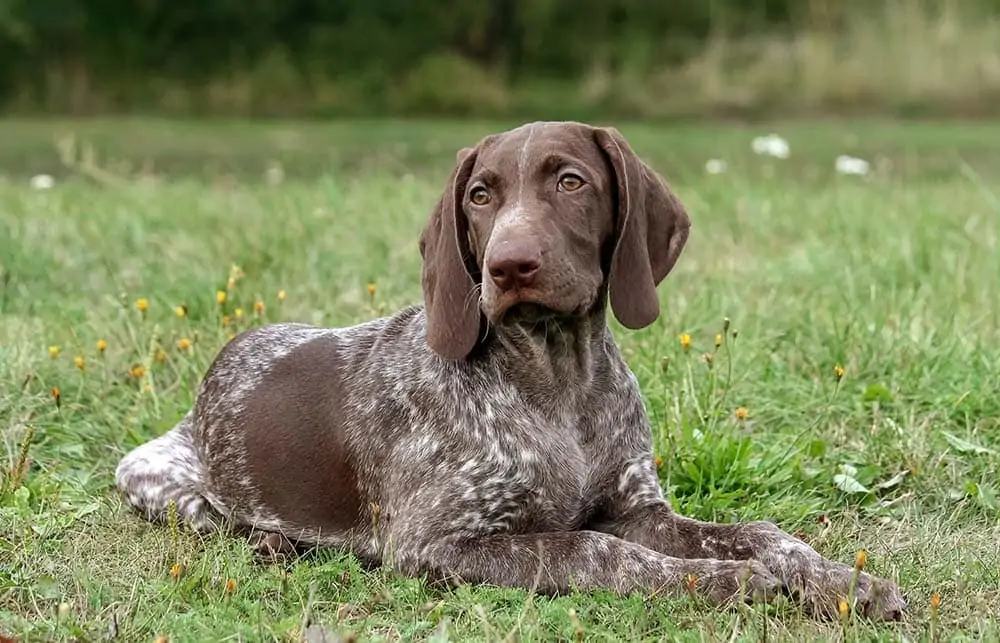

Home
Popular
Dog Breeds
About

Search Dog Breeds
Affenpinscher
Hair
Age
Weight
African Hunting Dog
Airedale
Appenzeller
Barabancon Griffon
Basenji
Basset
Beagle
Bluetick
Borzoi
Bouvier Des Flandres
Boxer
Briard
Boston Bull
French Bulldog
Cairn
Cardigan
Chihuahua
Chow
Clumber
Collie
Border Collie
Dandie Dinmont
Dhole
Dingo
Doberman
EntleBucher
Eskimo Dog
Great Dane
Great Pyrenees
Groenendael
Ibizan Hound
Norwegian ElkHound
Scottish DearHound
Afghan Hound
Black-and-Tan CoonHound
BloodHound
English FoxHound
Irish WolfHound
Italian GreyHound
Walker Hound
Keeshond
Kelpie
Komondor
Kuvasz
Leonberg
Lhasa
Malamute
Malinois
Maltese dog
Bull Mastiff
Tibetan Mastiff
Mexican Hairless
Papillon
Miniature Pinscher
Bernese Mountain Dog
Greater Swiss Mountain Dog
Newfoundland
Pekinese
Pembroke
German Short-Haired Pointer
Pomeranian
Miniature Poodle
Standard Poodle
Pug
Redbone
Chesapeake Bay Retriever
Curly-Coated Retriever
Flat-Coated Retriever
Golden Retriever
Labrador Retriever
Rhodesian Ridgeback
Rottweiler
Saint Bernard
Saluki
Samoyed
Schipperke
Gaint Schnauzer
Miniature Schnauzer
Standard Schnauzer
English Setter
Gordon Setter
Irish Setter
Old English Sheepdog
Shetland Sheepdog
German Shepherd
Shih-Tzu
Siberian Husky
Brittany Spaniel
Blenheim Spaniel
Japanese Spaniel
Cocker Spaniel
Sussex Spaniel
Welsh Springer Spaniel
Irish Water Spaniel
English Spaniel
English Springer
American Stanffordshire Terrier
Australian Terrier
Bedlington Terrier
Border Terrier
Irish Terrier
Kerry Blue Terrier
Lakeland Terrier
Norfolk Terrier
Norwich Terrier
Scotch Terrier
Sealyham Terrier
Silky Terrier
Soft-Coated Wheaten Terrier
Tibetan Terrier
Toy Terrier
West Highland White Terrier
Wire-Haired Fox Terrier
Yorkshire Terrier
Vizsla
Weimaraner
Whippet
here is the end of the page